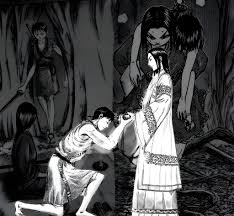

Ri Shin, formerly known as Shin, is the main protagonist of Kingdom. He is the leader of the powerfully famous specialist army unit, the Hi Shin Unit and a General of the Qin Military. He pursues the dream of becoming the Greatest General underneath the Heavens which was given to him by his late adoptive/sworn brother Hyou as he inspired Shin to take up the sword and aim for the goal of one day going to the battlefield to become Great Generals, with him wanting to inch and have their names go down in history.
Shins story 